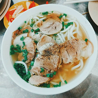
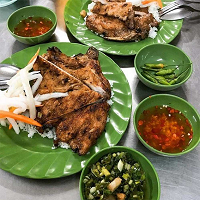
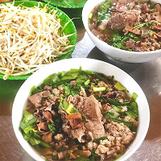

Cuisine From The South
Finally, things get sweeter in the south! You can even go so far as to say that the food here is a general reflection of the people in the region – they appear to be more laid back and happy. Maybe it’s the weather. The dishes down under are lighter and much smoother on the tongue, taking tips from Cambodia and Thailand. Saigon is also “international” unlike Hanoi which is more “cultural,” so foreign influence is readily apparent here
- 
BanhCanh - 
ComTam - 
HuTieu
LauCa